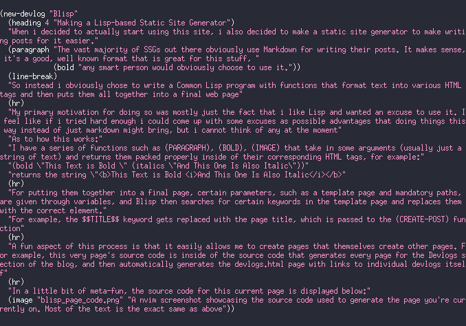

Making a Lisp-based Static Site Generator
When i decided to actually start using this site, i also decided to make a static site generator to make writing posts for it easier.
The vast majority of SSGs out there obviously use Markdown for writing their posts. It makes sense, it's a good, well known format that is great for this stuff, any smart person would obviously choose to use it.
So instead i obviously chose to write a Common Lisp program with functions that format text into various HTML tags and then puts them all together into a final web page
My primary motivation for doing so was mostly just the fact that i like Lisp and wanted an excuse to use it. I feel like if i tried hard enough i could come up with some excuses as possible advantages that doing things this way instead of just markdown might bring, but i cannot think of any at the moment
As to how this works:
I have a series of functions such as (PARAGRAPH), (BOLD), (IMAGE) that take in some arguments (usually just a string of text) and returns them packed properly inside of their corresponding HTML tags, for example:
(bold "This Text is Bold " (italics "And This One Is Also Italic"))
returns the string "This Text is Bold And This One Is Also Italic
For putting them together into a final page, certain parameters, such as a template page and mandatory paths, are given through variables, and Blisp then searches for certain keywords in the template page and replaces them with the correct element.
For example, the $$TITLE$$ keyword gets replaced with the page title, which is passed to the (CREATE-POST) function
A fun aspect of this process is that it easily allows me to create pages that themselves create other pages. For example, this very page's source code is inside of the source code that generates every page for the Devlogs section of the blog, and then automatically generates the devlogs.html page with links to individual devlogs itself
In a little bit of meta-fun, the source code for this current page is displayed below:
